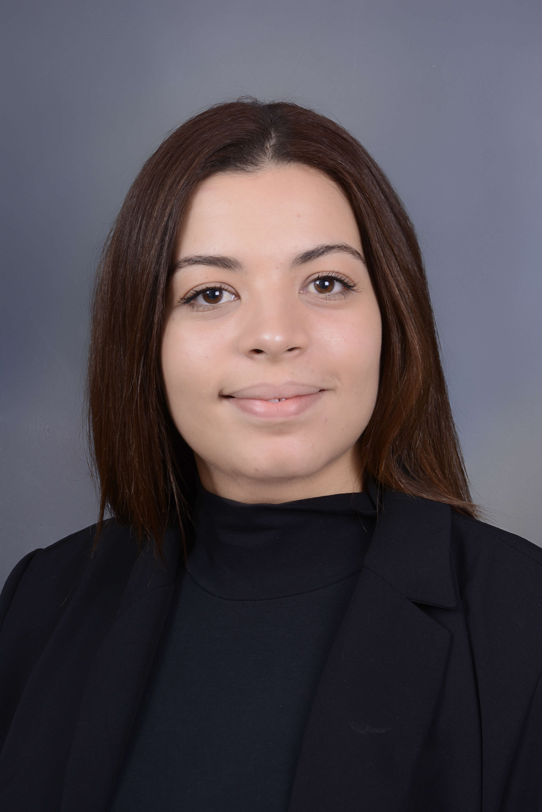

SAKIS Nour El Houda

- 23 ans
- 45 boulevard diderot, PARIS 75012
- 0623359138
- nourelhouda.sakis@edu.univ-paris13.fr
Diplômes
2021 - : Diplôme d'ingénieur en Instrumentation: Sup Galilée Université Sorbonne Paris Nord (Double dipolome d'ingénieur)
2016 - 2021 : Diplome d'ingénieur en électromécanique spécialité Mécatronique : Ecole supérieur d'ingénieurie et de technologie ESPRIT, Tunisie
2016 : Diplome de baccalaureat scientifique : spécialité mathématiques
Compétences
-Langues : Arabe – Français – Anglais
-Logiciels maîtrisés : Matlab, Tia Portal , Solidworks, Catia, altium designer
-Programmation : Language C/C++,VHDL